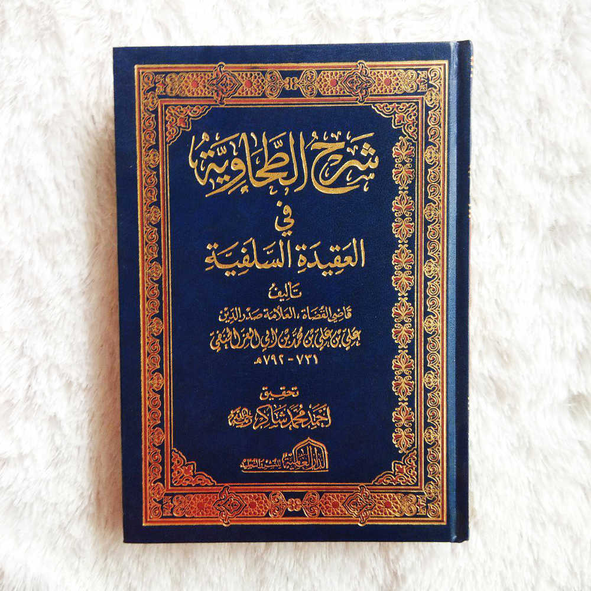

Bedah Buku: Syarah aqidah Athahawiyyah
Ditulis Oleh Imam ibn Abi Izz Al-hanafii

Dalam syarah ini, Imam Ibnu Abil ‘Izz menjelaskan setiap poin aqidah dengan metode berlandaskan Al-Qur’an, Sunnah, ijma’ salaf, serta bantahan terhadap berbagai penyimpangan aqidah
Kitab ini membahas pokok-pokok aqidah Islam secara menyeluruh, di antaranya tauhid rububiyyah, uluhiyyah, dan asma’ wa shifat, kewajiban beriman kepada Allah tanpa tahrif, ta’thil, takyif, dan tamtsil. Penulis menegaskan bahwa jalan keselamatan adalah mengikuti pemahaman para sahabat, tabi‘in, dan imam-imam salaf, serta menjauhi metode ilmu kalam.
Dalam pembahasan iman, Imam Ibnu Abil ‘Izz menjelaskan bahwa iman adalah ucapan, keyakinan, dan perbuatan, yang bisa bertambah dengan ketaatan dan berkurang dengan maksiat, menyelisihi pemahaman Murji’ah dan Khawarij. Kitab ini juga membahas secara rinci tentang takdir, penetapan qadha dan qadar, serta sikap pertengahan Ahlus Sunnah antara Jabariyyah dan Qadariyyah.
Selain itu, syarah ini memuat pembahasan tentang kenabian, mukjizat, hari akhir, siksa kubur, syafa’at, mizan, shirath, surga dan neraka, serta sikap Ahlus Sunnah terhadap para sahabat Rasulullah ﷺ, kewajiban mencintai mereka dan menahan lisan dari perselisihan yang terjadi di antara mereka.
Keistimewaan kitab ini terletak pada ketegasan manhaj salaf, kekuatan dalil, serta bantahan ilmiah terhadap kelompok-kelompok menyimpang seperti Jahmiyyah, Mu’tazilah, Rafidhah, Khawarij, dan Murji’ah, dengan bahasa yang lugas dan argumentasi yang kuat. Oleh karena itu, kitab ini menjadi rujukan penting dalam mempelajari aqidah Islam yang lurus dan kokoh.
فَإِنَّ مَذْهَبَ السَّلَفِ أَعْلَمُ وَأَحْكَمُ وَأَسْلَمُ
“Sesungguhnya madzhab salaf itu lebih berilmu, lebih bijak, dan lebih selamat.”
Kembali ke katalog